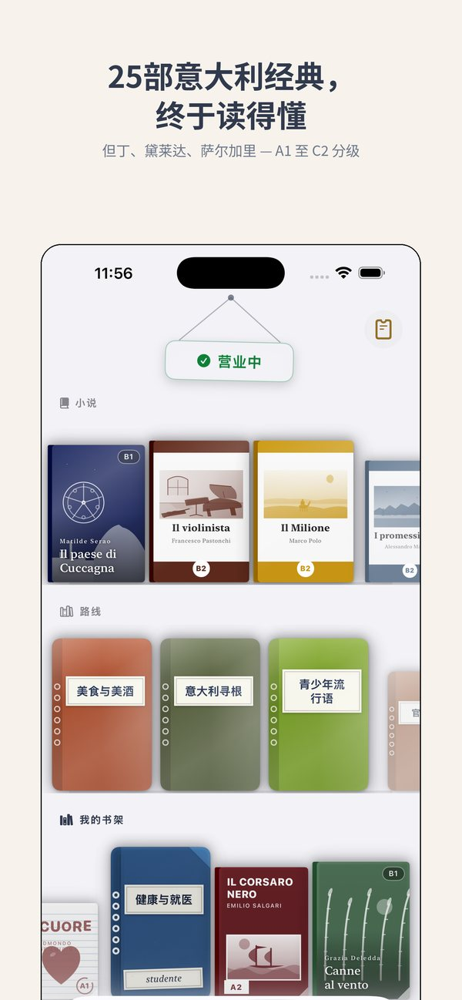
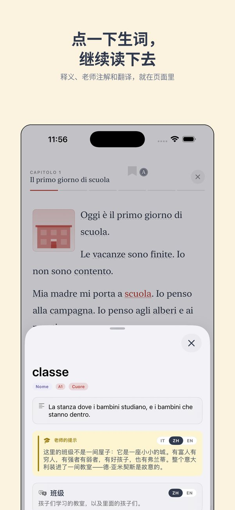
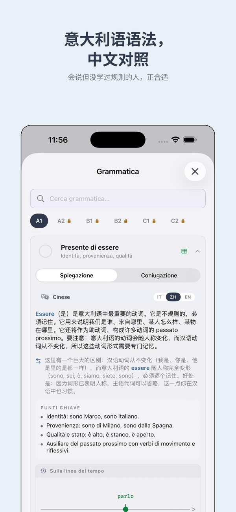
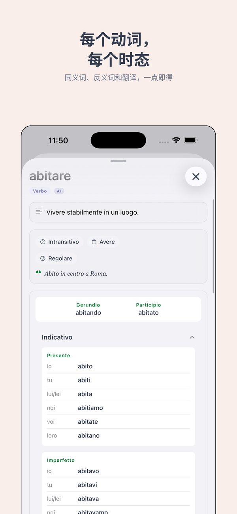
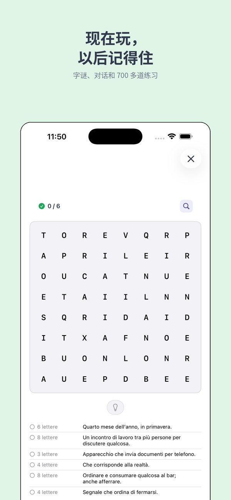

从第一个词到但丁。
意大利语反身动词
主语与宾语相同的动词——用 mi、ti、si、ci、vi、si。
Half of the A1 path is open, no sign-up
从 A1 开始 ↗︎什么是反身动词
反身动词的主语和宾语是同一个人。中文说"我洗自己",意大利语用反身代词+动词:mi lavo(我洗我自己 = 我洗澡)。
反身代词有六个:
- mi — 我自己
- ti — 你自己
- si — 他/她/它自己
- ci — 我们自己
- vi — 你们自己
- si — 他们自己
反身动词以 -si 结尾:lavarsi(洗澡)、alzarsi(起床)、chiamarsi(名叫)。
变位 lavarsi(洗澡)
io mi lavo · tu ti lavi · lui/lei si lava
noi ci laviamo · voi vi lavate · loro si lavano
反身代词放在动词前面。在近过去时中,反身动词用essere:mi sono lavato(我洗过澡了)。
常见反身动词
- chiamarsi — 名叫: Mi chiamo Li.(我叫李。)
- alzarsi — 起床: Mi alzo alle 7.(我 7 点起床。)
- svegliarsi — 醒来
- vestirsi — 穿衣服
- divertirsi — 玩得开心: Ci divertiamo.(我们玩得开心。)
- riposarsi — 休息
- arrabbiarsi — 生气
- innamorarsi — 爱上
例句
Mi chiamo Wang. — 我叫王。
Ti svegli presto? — 你早起吗?
Ci vediamo domani! — 明天见!
Loro si divertono al parco. — 他们在公园玩得开心。
Ti · iOS app
See Ti in action
The CEFR path, exercises, edicola and graded Italian classics — from A1 to C2, in 14 languages.






更多来自 Thuis Italiaans